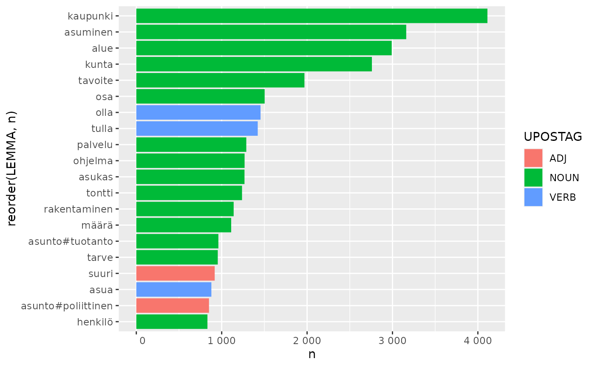
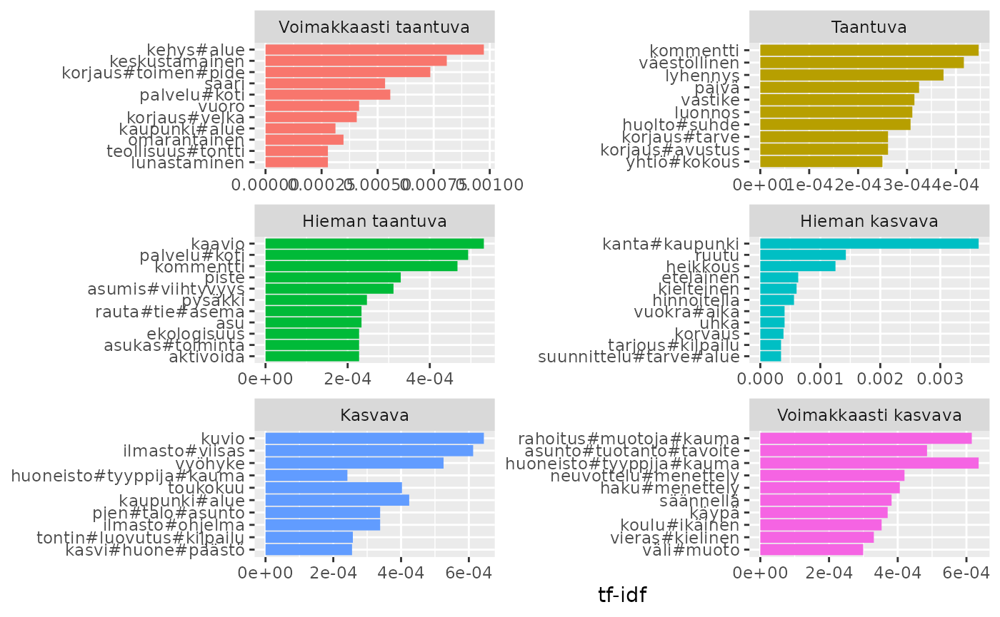
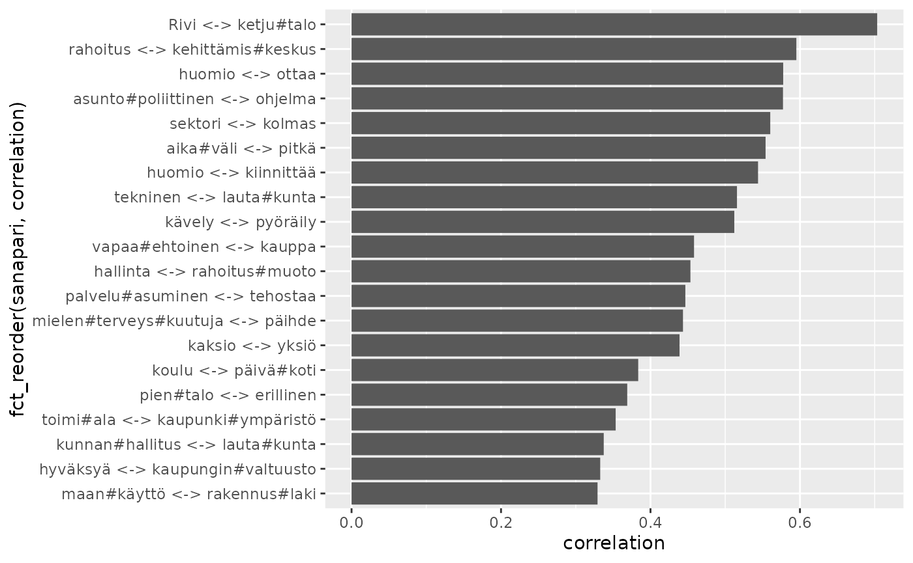

library(rfintext)
# devtools::install_github("StranMax/rfinstats")
library(rfinstats)
library(dplyr)
library(tidytext)
library(ggplot2)
library(stringr)
library(forcats)
plot_max_terms <- function(df, .by, .n) {
df |>
slice_max(order_by = {{.by}}, n = {{.n}}) |>
ggplot() +
geom_col(aes(x = n, y = reorder(LEMMA, n), fill = UPOSTAG)) +
scale_x_continuous(labels = function(x) format(x, big.mark = " ", scientific = FALSE))
}
aspol |>
count(LEMMA, UPOSTAG, sort = TRUE) |>
plot_max_terms(.by = n, .n = 20)
preprocess_corpus(aspol) |>
count(LEMMA, UPOSTAG, sort = TRUE) |>
plot_max_terms(.by = n, .n = 20)
#> Dropped 222659 rows
#> Dropped 2309 rows
#> Dropped 19 rows
#> Dropped 33047 rows
#> Dropped 9180 rows
#> Dropped 3076 rows
count_doc_size <- function(df, group) {
group_size <- df |> count({{group}}, name = "group_term_count")
suppressMessages(
df |>
count({{group}}, LEMMA, sort = TRUE, name = "dtc") |>
left_join(group_size)
)
}
tidy_tf_idf <- preprocess_corpus(aspol) |>
inner_join(taantuvat) |>
count_doc_size(luokka) |>
bind_tf_idf(LEMMA, luokka, dtc)
#> Dropped 222659 rows
#> Dropped 2309 rows
#> Dropped 19 rows
#> Dropped 33047 rows
#> Dropped 9180 rows
#> Dropped 3076 rows
#> Joining with `by = join_by(kunta)`
tidy_tf_idf %>%
select(-group_term_count) %>%
arrange(desc(tf_idf))
#> # A tibble: 15,293 × 6
#> luokka LEMMA dtc tf idf tf_idf
#> <fct> <chr> <int> <dbl> <dbl> <dbl>
#> 1 Hieman kasvava kanta#kaupunki 144 0.00898 0.405 0.00364
#> 2 Hieman kasvava ruutu 33 0.00206 0.693 0.00143
#> 3 Hieman kasvava heikkous 29 0.00181 0.693 0.00125
#> 4 Voimakkaasti taantuva kehys#alue 42 0.00140 0.693 0.000974
#> 5 Voimakkaasti taantuva keskustamainen 22 0.000736 1.10 0.000808
#> 6 Voimakkaasti taantuva korjaus#toimen#pide 20 0.000669 1.10 0.000735
#> 7 Kasvava kuvio 40 0.000930 0.693 0.000644
#> 8 Voimakkaasti kasvava huoneisto#tyyppija#kauma 36 0.000917 0.693 0.000636
#> 9 Hieman kasvava eteläinen 25 0.00156 0.405 0.000632
#> 10 Voimakkaasti kasvava rahoitus#muotoja#kauma 22 0.000560 1.10 0.000616
#> # ℹ 15,283 more rows
tidy_tf_idf %>%
group_by(luokka) %>%
slice_max(tf_idf, n = 10) %>%
ungroup() %>%
ggplot(aes(tf_idf, fct_reorder(LEMMA, tf_idf), fill = luokka)) +
geom_col(show.legend = FALSE) +
facet_wrap(~luokka, ncol = 2, scales = "free") +
labs(x = "tf-idf", y = NULL)
kappaleet <- preprocess_corpus(aspol) |>
mutate(kappale = paste0(kunta, "-", sent)) |>
count(kappale, LEMMA)
#> Dropped 222659 rows
#> Dropped 2309 rows
#> Dropped 19 rows
#> Dropped 33047 rows
#> Dropped 9180 rows
#> Dropped 3076 rows
word_pairs <- kappaleet |>
pairwise_count(LEMMA, kappale, sort = TRUE, upper = FALSE)
word_pairs
#> # A tibble: 296,628 × 3
#> item1 item2 n
#> <chr> <chr> <dbl>
#> 1 asunto#poliittinen ohjelma 587
#> 2 alue kaupunki 361
#> 3 tavoite kaupunki 331
#> 4 palvelu asuminen 278
#> 5 asuminen kaupunki 265
#> 6 kunta alue 255
#> 7 kaupunki ohjelma 247
#> 8 suuri osa 233
#> 9 tontti kaupunki 233
#> 10 osa asuminen 222
#> # ℹ 296,618 more rows
word_cors <- kappaleet %>%
group_by(LEMMA) %>%
filter(n() >= 40) %>%
pairwise_cor(LEMMA, kappale, sort = TRUE, upper = FALSE)
word_cors |> print(n = 50)
#> # A tibble: 423,660 × 3
#> item1 item2 correlation
#> <chr> <chr> <dbl>
#> 1 Rivi ketju#talo 0.703
#> 2 rahoitus kehittämis#keskus 0.595
#> 3 huomio ottaa 0.578
#> 4 asunto#poliittinen ohjelma 0.577
#> 5 sektori kolmas 0.560
#> 6 aika#väli pitkä 0.554
#> 7 huomio kiinnittää 0.544
#> 8 tekninen lauta#kunta 0.516
#> 9 kävely pyöräily 0.512
#> 10 vapaa#ehtoinen kauppa 0.458
#> 11 hallinta rahoitus#muoto 0.453
#> 12 palvelu#asuminen tehostaa 0.447
#> 13 mielen#terveys#kuutuja päihde 0.443
#> 14 kaksio yksiö 0.439
#> 15 koulu päivä#koti 0.384
#> 16 pien#talo erillinen 0.369
#> 17 toimi#ala kaupunki#ympäristö 0.353
#> 18 kunnan#hallitus lauta#kunta 0.337
#> 19 hyväksyä kaupungin#valtuusto 0.333
#> 20 maan#käyttö rakennus#laki 0.329
#> 21 kustannus aiheutua 0.329
#> 22 palvelu#asuminen tehostettu 0.323
#> 23 luoda edellytys 0.320
#> 24 kevyt liikenne 0.316
#> 25 kunnan#valtuusto kunnan#hallitus 0.315
#> 26 arki sujuva 0.309
#> 27 asuin#kerros#talo ketju#talo 0.306
#> 28 erityinen kiinnittää 0.298
#> 29 korko#tuki pitkä 0.297
#> 30 kunnan#valtuusto lauta#kunta 0.295
#> 31 kustannus yhdyskunta#rakentaminen 0.294
#> 32 korvaus kunnallis#tekninen 0.294
#> 33 läheisyys välitön 0.293
#> 34 maa#poliittinen ohjelma 0.291
#> 35 hallinta#peruste tuntematon 0.290
#> 36 nuori aikuinen 0.285
#> 37 kerros#talo#asunto rivi#talo#asunto 0.284
#> 38 väestö ikääntyminen 0.283
#> 39 rivi ketju#talo 0.278
#> 40 avustus myöntää 0.275
#> 41 määrällinen laadullinen 0.275
#> 42 yhdyskunta#rakentaminen kaava#alue 0.273
#> 43 aika viimeinen 0.271
#> 44 tontti luovuttaa 0.266
#> 45 pien#talo ketju#talo 0.261
#> 46 kestävyys sosiaalinen 0.257
#> 47 ympäristö#ministeriö raportti 0.257
#> 48 palvella kaava#alue 0.256
#> 49 hoito ympäri#vuoro#kautinen 0.250
#> 50 yhdyskunta#rakentaminen periä 0.249
#> # ℹ 423,610 more rows
word_cors |>
mutate(sanapari = paste0(item1, " <-> ", item2)) |>
slice_max(correlation, n = 20) |>
ggplot() +
geom_col(aes(x = correlation, y = fct_reorder(sanapari, correlation)))
kappaleet_kunta <- preprocess_corpus(aspol) |>
count(kunta, LEMMA)
#> Dropped 222659 rows
#> Dropped 2309 rows
#> Dropped 19 rows
#> Dropped 33047 rows
#> Dropped 9180 rows
#> Dropped 3076 rows
word_pairs_kunta <- kappaleet_kunta |>
pairwise_count(LEMMA, kunta, sort = TRUE, upper = FALSE)
word_pairs_kunta
#> # A tibble: 4,426,739 × 3
#> item1 item2 n
#> <chr> <chr> <dbl>
#> 1 alue tarve 64
#> 2 osa tarve 64
#> 3 alue kehittäminen 63
#> 4 alue osa 63
#> 5 kehittäminen osa 63
#> 6 osa rakentaminen 63
#> 7 asuminen tarve 63
#> 8 kehittäminen tarve 63
#> 9 koko tarve 63
#> 10 olla tarve 63
#> # ℹ 4,426,729 more rows
word_cors_kunta <- kappaleet_kunta %>%
group_by(LEMMA) %>%
filter(n() >= 40) %>%
pairwise_cor(LEMMA, kunta, sort = TRUE, upper = FALSE)
word_cors_kunta
#> # A tibble: 34,191 × 3
#> item1 item2 correlation
#> <chr> <chr> <dbl>
#> 1 erilainen ohjata 0.817
#> 2 alue kehittäminen 0.810
#> 3 kehittäminen osa 0.810
#> 4 osa rakentaminen 0.810
#> 5 osa tavoite 0.810
#> 6 asettaa tarkoittaa 0.801
#> 7 kasvaa väestö 0.787
#> 8 erityis#ryhmä kasvaa 0.779
#> 9 mahdollinen ottaa 0.770
#> 10 kanta syy 0.764
#> # ℹ 34,181 more rows
word_cors_kunta |>
mutate(sanapari = paste0(item1, " <-> ", item2)) |>
slice_max(correlation, n = 20) |>
ggplot() +
geom_col(aes(x = correlation, y = fct_reorder(sanapari, correlation)))